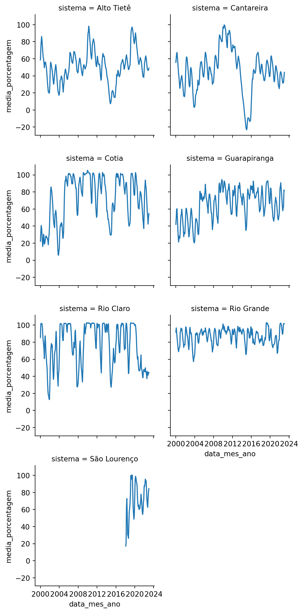

Abastecimento público da Região Metropolitana de São Paulo
Trabalho final para o curso Python para usuários de R, da Curso-R
Análise exploratória
Estudos
Quarto
Python
Pandas
Seaborn
Autor
Beatriz Milz
Data de Publicação
6 de janeiro de 2023
Esse texto é o trabalho final para o curso Python para usuários de R, da Curso-R. O objetivo do trabalho é praticar as ferramentas apresentadas no curso, como usar as bibliotecas pandas e seaborn.
Introdução
Explorando dados sobre os mananciais que abastecem a Região Metropolitana de São Paulo. Estes dados são produzidos pela SABESP, e aqui utilizei os dados do pacote em R Mananciais, que disponibiliza a base dos dados atualizada diariamente em CSV.
Objetivos
Responder as seguintes perguntas:
Quais são os sistemas presentes na base Mananciais?
Qual é o sistema com a menor volume armazenado atualmente?
Como o volume armazenado variou ao longo de 2022?
Setup
Código
# descobrindo a versao do pythonfrom platform import python_versionversao_python = python_version()# escrevendo um parágrafo que apresente o valor guardado na variável versao_pythonfrom IPython.display import display, Markdowndisplay(Markdown("""Este trabalho foi desenvolvido em um computador com sistema Mac OS,com a versão do Python {versao_python}, utilizando a IDE VS Code,o software Quarto e a extensão do Quarto para o VS Code.""".format(versao_python = versao_python)))
Este trabalho foi desenvolvido em um computador com sistema Mac OS, com a versão do Python 3.10.4, utilizando a IDE VS Code, o software Quarto e a extensão do Quarto para o VS Code.
Preparando o ambiente
Antes de iniciar a explorar os dados, foi preciso preparar o ambiente. Primeiro criei um virtual environment para a instalação dos pacotes em Python utilizando o seguinte código no terminal:
Código
# criando ambiente virtual chamado envpython3 -m venv env
Para utilizar o virtual environment criado, utilizei o seguinte código no terminal:
Código
# ativando o ambiente virtual criadosource env/bin/activate
Foi necessário também atualizar o pip (usado para instalar as bibliotecas), e instalar o jupyter e os pacotes:
Código
# Para instalar o jupyterpip install jupyter# atualizar o pippip install --upgrade pip# Para instalar as bibliotecas pandas e seaborn:pip install pandaspip install seaborn# Para instalar a biblioteca altair e os dados de exemplo:pip install altair vega_datasets
Carregar bibliotecas
As bibliotecas utilizadas foram:
Código
# importar as bibliotecas usadasimport numpy as npimport pandas as pdimport seaborn as snsimport matplotlib.pyplot as pltimport altair as alt # importar o altair
Importar dados
Código
# salvando o link onde a base está disponívelurl_mananciais ='https://raw.githubusercontent.com/beatrizmilz/mananciais/master/inst/extdata/mananciais.csv'# lendo o CSV, o separador é ;mananciais = pd.read_csv(url_mananciais, sep =";")
Limpar/organizar os dados
Quais são as colunas disponíveis?
Código
# descobrindo as colunas e seus tiposmananciais.info(show_counts =False)
É necessário arrumar o tipo de algumas colunas (algumas estão como texto mas deveriam ser números), e criar novas colunas que podem ser úteis posteriormente (ano, mês, data arredondada para o início do mês, etc).
Código
# funcao para converter em numerodef converter_em_numero(serie): x = pd.to_numeric(serie.str.replace(',', '.')) return(x)# exemplo de uso!# converter_em_numero(mananciais['volume_porcentagem'])
Código
mananciais_arrumado = mananciais.assign(# convertendo a coluna data em tipo datetime data = pd.to_datetime(mananciais['data']),# daqui em diante: convertendo os valores das colunas em número volume_porcentagem =lambda x: converter_em_numero(x['volume_porcentagem']), volume_variacao =lambda x: converter_em_numero(x['volume_variacao']), volume_operacional =lambda x: converter_em_numero(x['volume_operacional']), pluviometria_dia =lambda x: converter_em_numero(x['pluviometria_dia']), pluviometria_mensal =lambda x: converter_em_numero(x['pluviometria_mensal']), pluviometria_hist =lambda x: converter_em_numero(x['pluviometria_hist']))
Código
# criando a coluna do mêsmananciais_arrumado['data_mes'] = pd.DatetimeIndex(mananciais_arrumado['data']).month# criando a coluna do anomananciais_arrumado['data_ano'] = pd.DatetimeIndex(mananciais_arrumado['data']).year# cria a coluna do mes/anomananciais_arrumado['data_mes_ano'] = mananciais_arrumado['data'].apply(lambda x : x.replace(day=1))
Quais são os sistemas presentes na base Mananciais?
Código
array_mananciais = mananciais_arrumado['sistema'].unique()lista_mananciais = array_mananciais.tolist()texto_mananciais =", ".join(lista_mananciais[:-1])ultimo_sistema = lista_mananciais[-1]display(Markdown("""Os sistemas presentes na base são: {texto_mananciais} e {ultimo_sistema}.""".format(texto_mananciais = texto_mananciais, ultimo_sistema = ultimo_sistema)))
Os sistemas presentes na base são: Cantareira, Alto Tietê, Guarapiranga, Cotia, Rio Grande, Rio Claro e São Lourenço.
Qual é o sistema com a menor volume armazenado atualmente?
Código
# filtrando os dados com a data maissistemas_atualmente = mananciais_arrumado.query("data == data.max()")# deixando a tabela mais apresentável# arredondando a coluna volume operacionalsistemas_atualmente["Volume operacional"] = sistemas_atualmente["volume_operacional"].round(1)# criando uma função para adicionar a porcentagemdef adicionar_porcentagem(x):returnf"{x} %"# aplicando a função de adicionar porcentagemsistemas_atualmente["Volume"] = sistemas_atualmente["volume_porcentagem"].apply(adicionar_porcentagem)# renomeando colunasistemas_atualmente["Sistema"] = sistemas_atualmente["sistema"]
A seguir estão apresentados os sistemas ordenados por volume operacional (quantidade absoluta):
Código
# ordenando de forma crescente segundo o Volume operacional e selecionando as colunas desejadas( sistemas_atualmente.filter(["Sistema", "Volume", "Volume operacional"]). sort_values("Volume operacional", ascending=True))
Sistema
Volume
Volume operacional
5
Rio Claro
46.2 %
6.3
3
Cotia
57.3 %
9.5
6
São Lourenço
90.5 %
80.4
4
Rio Grande
103.3 %
115.8
2
Guarapiranga
78.2 %
133.9
1
Alto Tietê
49.8 %
279.0
0
Cantareira
45.3 %
444.5
E os sistemas ordenados por volume percentual (quantidade relativa):
Código
# ordenando de forma crescente segundo o volume percentual e selecionando as colunas desejadas( sistemas_atualmente. sort_values("volume_porcentagem", ascending=True).filter(["Sistema", "Volume", "Volume operacional"]))
Sistema
Volume
Volume operacional
0
Cantareira
45.3 %
444.5
5
Rio Claro
46.2 %
6.3
1
Alto Tietê
49.8 %
279.0
3
Cotia
57.3 %
9.5
2
Guarapiranga
78.2 %
133.9
6
São Lourenço
90.5 %
80.4
4
Rio Grande
103.3 %
115.8
O sistema com o menor volume porcentual armazenado é o Cantareira, um sistema de reservatórios muito importante para o abastecimento público da Região Metropolitana de São Paulo.
Como o volume armazenado variou ao longo do tempo?
Para criar uma visualização que apresente o volume armazenado ao longo do tempo, primeiramente é necessário agrupar por sistema e mês/ano, e então calcular a média do valor referente ao volume. Isso nos dá a média de volume armazenado por sistema e mês/ano.
alt.Chart(mananciais_sumarizado).mark_line().encode( x = alt.X('data_mes_ano', title ="Mês e Ano"), y = alt.Y('media_porcentagem', title ='Volume armazenado (%)'), color ='sistema')
/home/codespace/.python/current/lib/python3.10/site-packages/altair/utils/core.py:317: FutureWarning:
iteritems is deprecated and will be removed in a future version. Use .items instead.
Código
grafico = sns.FacetGrid(mananciais_sumarizado, col ="sistema", col_wrap =2)grafico.map_dataframe(sns.lineplot, x ="data_mes_ano", y ="media_porcentagem", hue ="sistema")grafico
<seaborn.axisgrid.FacetGrid at 0x7fc2f75af4c0>

Como o volume do sistema Cantareira variou ao longo de 2022?
Código
# filtra dados do sistema cantareiradados_cantareira = mananciais_sumarizado.query("sistema == 'Cantareira'")# cria um array de verdadeiro ou falso, sendo verdadeiro os valores de 2022ano_2022 = dados_cantareira.data_mes_ano >= np.datetime64('2022-01-01')# filtra os dados da cantareira com o array criado acimadados_cantareira_2022 = dados_cantareira[ano_2022]
alt.Chart(dados_cantareira_2022).mark_line().encode( x = alt.X('data_mes_ano', title ="Mês e Ano"), y = alt.Y('media_porcentagem', title ='Volume armazenado (%)') )
Código
sns.lineplot(x ="data_mes_ano", y ="media_porcentagem", data = dados_cantareira_2022)plt.show()